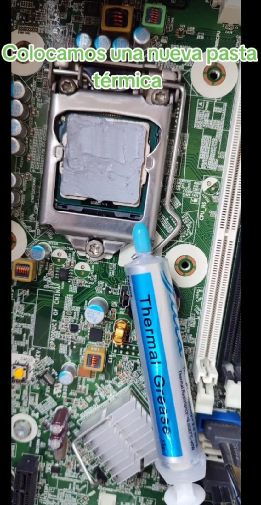
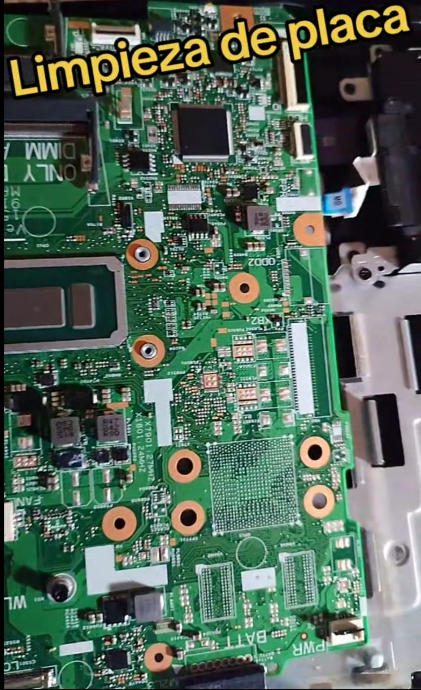
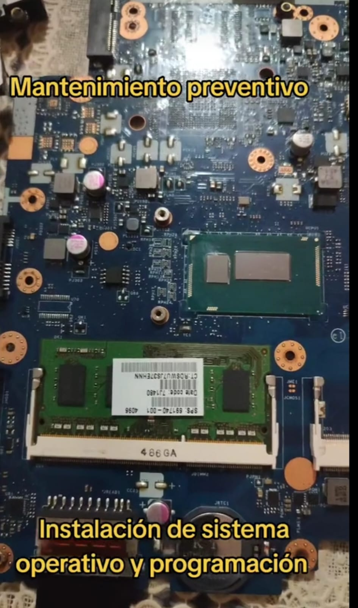

Galería de trabajos




Mantenimiento y Soluciones Informáticas
Soluciones profesionales para computadoras, laptops y equipos informáticos. Recuperamos el rendimiento y prolongamos la vida útil de tus equipos.
Solicitar servicioLimpieza interna, cambio de pasta térmica, optimización del sistema y revisión general.
Diagnóstico de fallas de hardware, problemas de encendido, lentitud y errores del sistema.
Instalación y configuración de Windows, Linux, programas, drivers y respaldo de información.
Mejoramos velocidad del sistema, almacenamiento y rendimiento general.
Durante nuestra trayectoria hemos realizado mantenimiento y reparación a casi 500 equipos, ayudando a clientes particulares a mantener sus computadoras funcionando correctamente.



Solicita diagnóstico o mantenimiento para tu computadora.
📱 WhatsApp: Tu número aquí
📍 Atención a clientes particulares
🕒 Servicio técnico profesional